Activity: Retrieving and placing dimensions
Overview
This activity covers the workflow of placing dimensions and annotations on a drawing. An existing drawing file is used to dimension and annotate.
Objectives
In this activity you will:
-
Retrieve dimensions from the Model.
-
Update out-of-date drawing views.
-
Use the Drawing View Tracker.
-
Place dimensions on a drawing.
-
Modify dimensions on a drawing.
-
Place annotations on a drawing.
-
Open fan_body.dft.
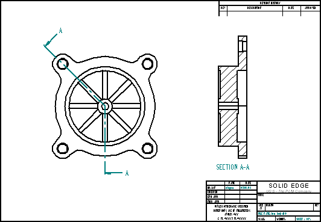
Begin the activity by working on the front view. Retrieve dimensions from the part model.
Choose the Zoom Area command. Zoom in on the drawing view as shown.
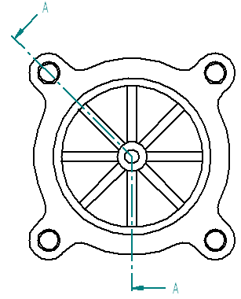
On the Home tab→Dimension group, choose Retrieve Dimensions .
Click the drawing view to retrieve dimensions contained in the part model.
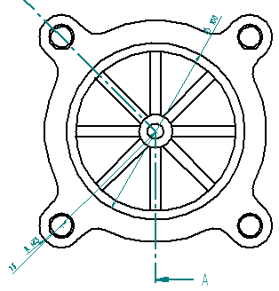
Delete and replace a dimension. Reposition a dimension.
Click the Select tool, and then delete the 100 mm diameter dimension.
You will replace this dimension on the cross-section view later in the activity.
Reposition the 75 mm dimension. Click the dimension value and drag it inside the dimension projection lines. Click the dimension line and drag it to the position shown.
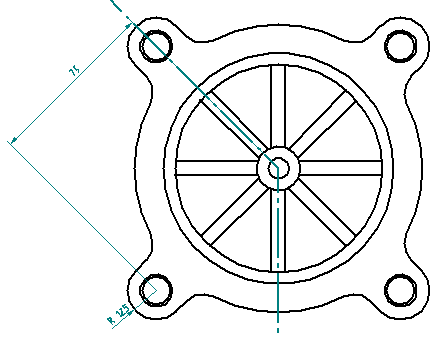
Place a center mark in the center of the part and on each of the counterbored holes.
On the Home tab→Annotation group, choose Center Mark .
On the command bar, select Projection Lines .
Select the By 2 Points option.
For the first point, click circle (A).
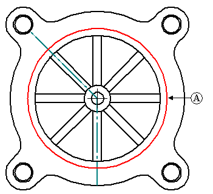
For the second point, click the center of the upper-right counterbored hole to place the center mark.
Repeat these two steps for the three remaining counterbored holes. Right-click after placing each center mark.
To place the first center mark on the interior circle, change the dimension type to Horizontal/Vertical and select circle (A).
To place the center marks between the diagonal ribs, change the orientation to Use Dimension Axis.
On the command bar, click the Dimension Axis option .
Click the 45° line (B). This will enable you to place center marks parallel and perpendicular to this line.
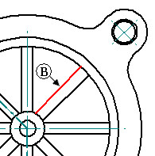
Place the 45° center marks by selecting circle (A).
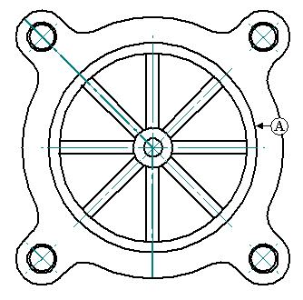
Place angular dimensions on the holes measured from the right horizontal center line.
On the Home tab→Dimension group, choose Angle Between .
Set the Orientation option to Horizontal/Vertical, and place an angular dimension from the right horizontal center line to the 45° center mark line on the upper-right counter bore hole.
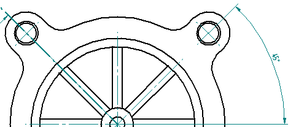
Do not end this command. Continue using the same origin. Select the angled center mark line on the upper-left side counter bore hole, and place the string 90° dimension.
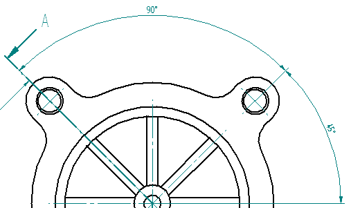
Dimension the fin thickness. Add a prefix to the dimension.
On the Home tab→Dimension group, choose Distance Between .
On the command bar, click the Prefix
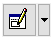
option under the Tolerance group. Type 8 X in the Prefix field and click OK.Set the dimension orientation to Horizontal/Vertical and select the two vertical lines illustrated below to place the new dimension. Click to position the dimension. This is the thickness dimension for each of the eight fins.
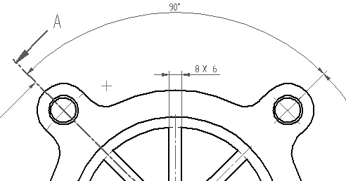
Add a smart dimension to the bottom-right hole. Set a prefix and suffix for the dimension and also add special characters to include in the dimension display.
Choose the Smart Dimension command
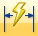
.Click the Prefix option on the command bar.
Set the prefix to 4 X.
Click the Suffix field, and do the following:
-
Click the Counterbore symbol from the special characters, and press the spacebar.
-
Click the Diameter symbol
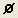
, press the spacebar, and type 14. -
Press the spacebar.
-
Click the Depth symbol
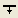
, press the spacebar, and type 5. This sets the suffix to the diameter and depth of the counter bored hole. -
Click OK to accept these inputs. The special characters are displayed with a % sign as part of the character in the Suffix field. But the symbol is actually placed on the drawing.
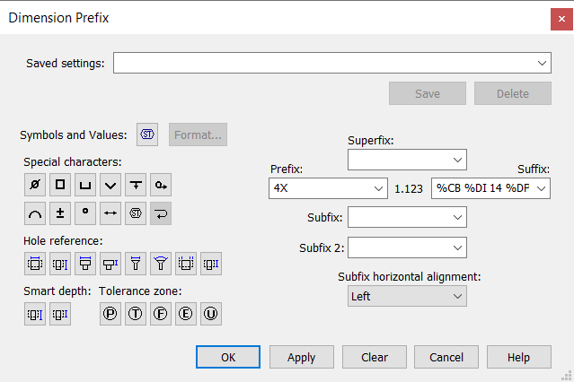
Select the through hole in the lower-right counterbore hole. Any dimensions placed after this one will exhibit the same prefix and suffix until you clear the Prefix field in the Dimension Prefix dialog box.
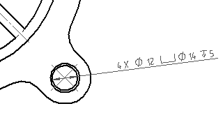
Place a distance between dimension with a prefix option on the section view.
Choose the Distance Between command, and click the Prefix option. Click the Clear button, and then set the Prefix to a diameter symbol. Click OK.
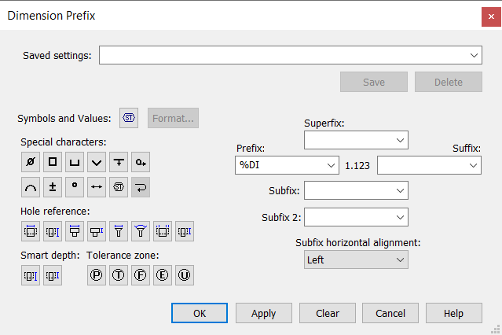
Fit the view and then zoom in on the section view. Right-click to exit the zoom area command.
Select the two horizontal lines (flanked by white space and crosshatching), and place the dimension to the right of the view as shown. Even though this is a linear dimension, the diameter symbol can be used as a prefix.
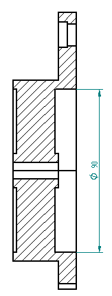
Save the document.
Edit the dimension placed in the previous step and place a tolerance on the dimension.
Using the Select tool, click the 90 mm diameter dimension in the section view.
The command bar changes to edit definition mode to make a change to the selected dimension.
Click Dimension Type under the Tolerance group, and then choose Unit Tolerance
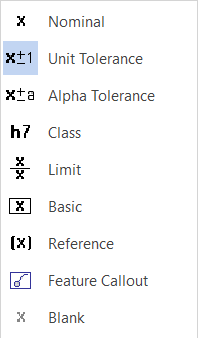
option.Type 0.03 in the Upper and Lower tolerance boxes.
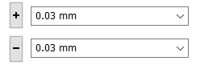
The dimension changes to show a plus/minus on the tolerance because the upper and lower values are the same. If the upper and lower tolerance values differ, the two tolerances display as separate items.
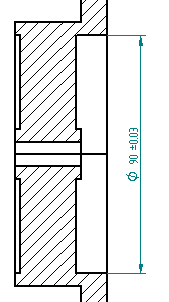
Edit the dimension and apply a dual unit dimension style.
Click the Select tool, and then right-click the 90 mm diameter dimension in the section view. Click Properties on the shortcut menu to display the Dimension Properties dialog box.
Changes here only change the property of the dimension selected. To modify all dimensions, click the Styles command in Style group and make the changes.
Click the Secondary Units tab, and then select the Dual unit display and the Add parenthesis ( ) boxes. Click OK.
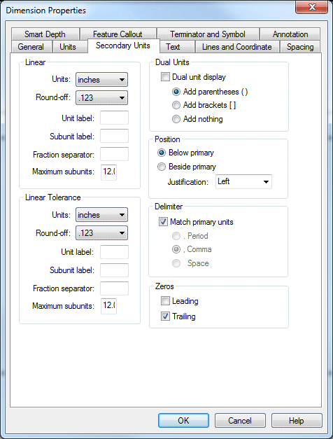
The 90 mm dimension updates to show the dual units.
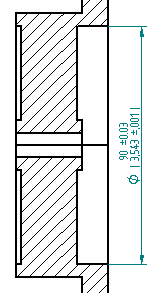
-
Choose Fit to fit the drawing sheet.
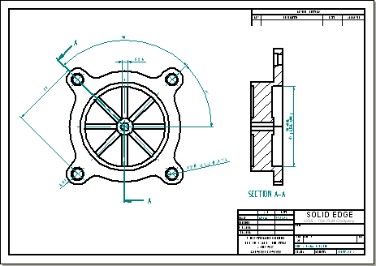
Notice that the drawing is too crowded. Change the drawing border to a larger size.
Right-click on the Sheet1 tab, and from the shortcut menu, click Sheet Setup.
Click the Background tab and change the background sheet to A2-Sheet. Click OK.
Fit the window again.
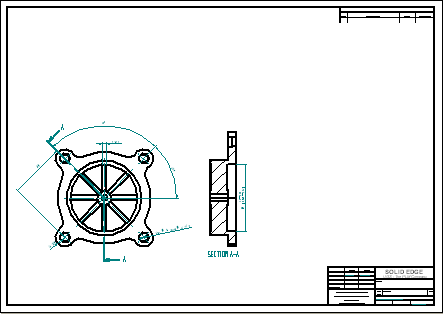
Reposition the views on the drawing sheet.
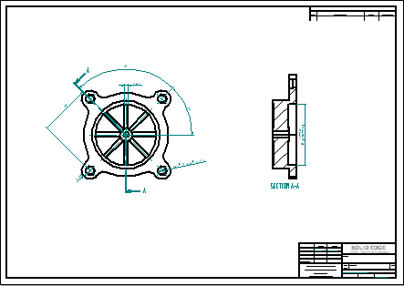
-
Save and close the draft file.
Open fan_body.par which was used to generate the drawing views. You will make a change to fan_body.par. When reopening the draft file, the changes are made obvious with the out-of-date drawing views.
-
Open fan_body.par.
Notice the eight fins on the fan. Select the circular pattern of fins. Use QuickPick or PathFinder to select the pattern.
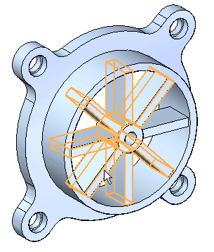
Click the Pattern X8 text, which is the edit handle.
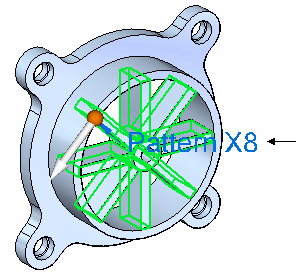
Type 6 in the pattern count edit handle and then press Enter.
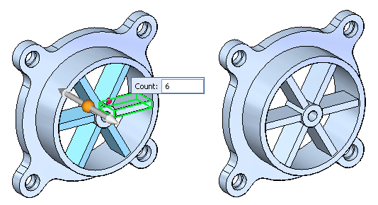
Save and close the file.
Open fan_body.dft created earlier in this activity to observe how the file behaves after fan_body.par was edited.
Open fan_body.dft.
A message box informs you that one or more of the current drawing views are out-of-date. It also tells you to go to the Drawing View Tracker command to get more information about the status of the drawing views.
Click OK. Notice the gray box that surrounds the drawing views. This box indicates that the views are out-of-date.
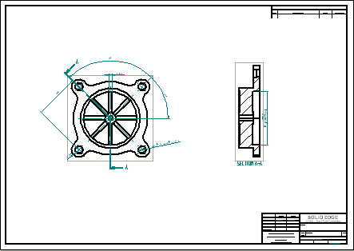
On the Tools tab→Assistants group, choose Drawing View Tracker.
The Drawing View Tracker shows which drawings are out-of-date. When you click on an entry, more information displays in the Update instructions box about that view.
In the Drawing View Tracker dialog box, click Update Views .
You could also select a single drawing view from the Drawing View Tracker dialog box and update that view by selecting Update View from the shortcut menu.
Click Close.
The Dimension Tracker dialog box is displayed. This lists annotations and dimensions that are affected by changes to the part file.
Click the row in the Dimension Tracker that lists Annotation (Center Mark) Detached — rebind failure, and then click Find. This highlights and zooms in on the detached annotation. It is identified by a change balloon.
Observe the row in the Dimension Tracker that lists Dimension (Linear) Value changed. It also shows the previous value of 6.00 and the current value of 5.2.
Click Clear All to clear the Dimension Tracker list and remove the change balloons from the drawing views.
Click Close to dismiss the Dimension Tracker dialog box.
Now notice that the drawing views update to reflect the change to the number of fins on the fan. Also notice that the boxes indicating out-of-date drawing views no longer display.
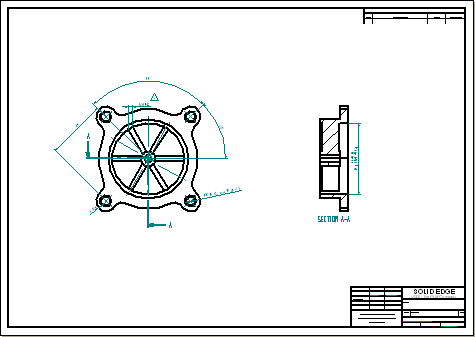
Fit the drawing sheet.
Save the file.
This completes the activity. However, you may continue to place additional views or dimensions for extra practice.
In the activity you learned how to place dimensions and annotations on a drawing. You also learned how to edit a part and then update the drawing views to reflect the changes.
-
Click the Close button in the upper-right corner of the activity window.
For more information about topics not covered in the Drawings book, see: